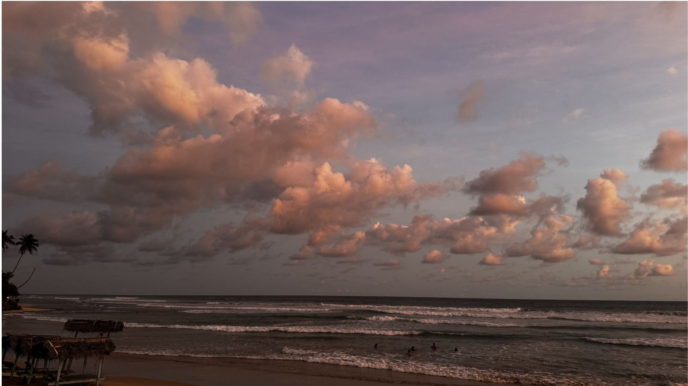
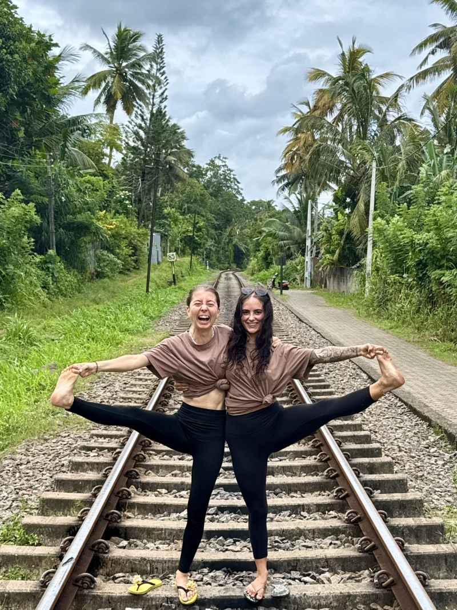
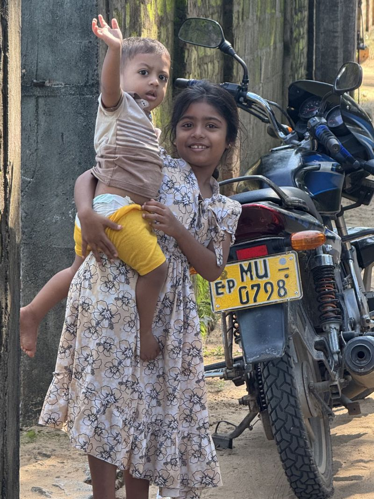
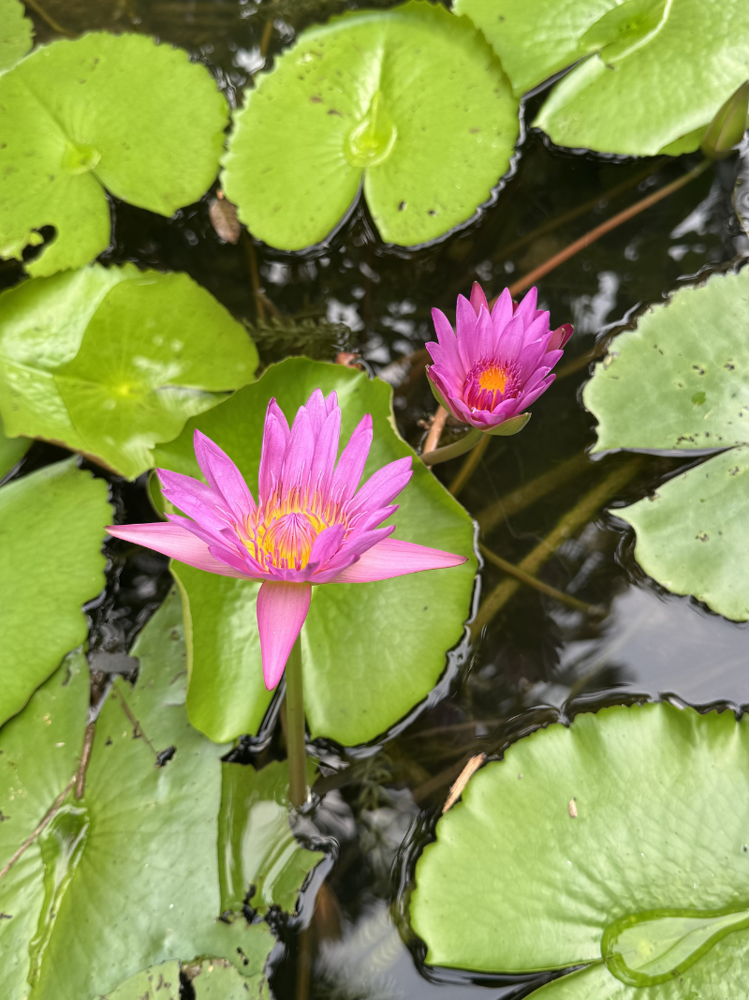
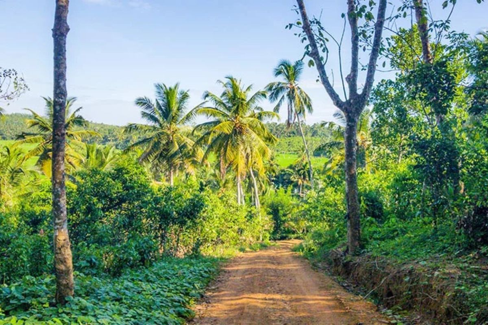
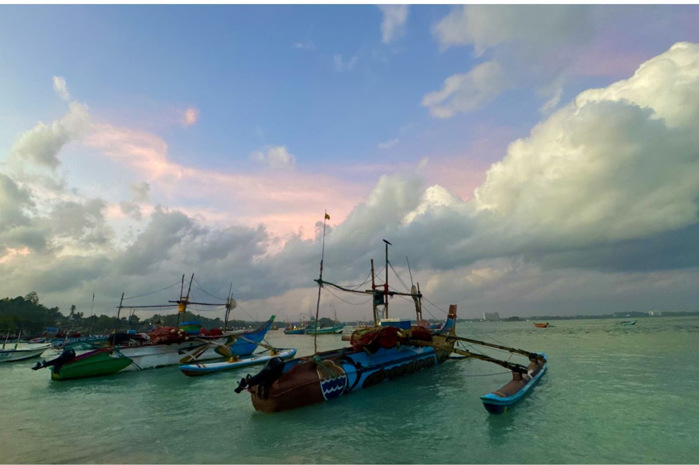

South Coast · Sri Lanka · Ahangama
The place
For years, Ahangama was a place people drove through. A busy bus stop and some local shops squeezed between the sea and the jungle, on the road to Mirissa or Weligama. Then surfers figured out it had some of the best breaks on the island. Word spread. People came. And a sleepy fishing village quietly became Sri Lanka's most interesting beach town.
The stilt fishermen are still here. So is the fish. What's arrived around them: slow-drip coffee, good food, surf schools, co-working spaces, boutique guesthouses, and a community of people who intended to stay two weeks and are still here a year later.




The rhythm
Midigama Beach is a short walk. Consistent breaks, good for all levels. Kabalana, known locally as The Rock, is just around the corner for the more experienced. Galle is 40 minutes up the coast: Dutch fort, colonial architecture, the best coffee on the south coast. Mirissa for whale watching. Sinharaja rainforest an hour inland.
But honestly, most people don't go far. The beach, the studio, the tuk tuk to the café, fresh seafood from a beachside shack. That loop is enough. That's the point.

Why Sri Lanka
Sri Lanka has a way of slowing people down, in the best sense. The light is extraordinary, the food is incredible, the people are warm. It's affordable without feeling cheap. Beautiful without being precious. And the south coast still has something a lot of places have lost: stilt fishermen casting at sunrise, local fish markets, a pace that doesn't apologise for itself.
You come to do something. Pilates, surf, a retreat, a break. And you find yourself actually doing it. Less distraction. More of the thing you came for.